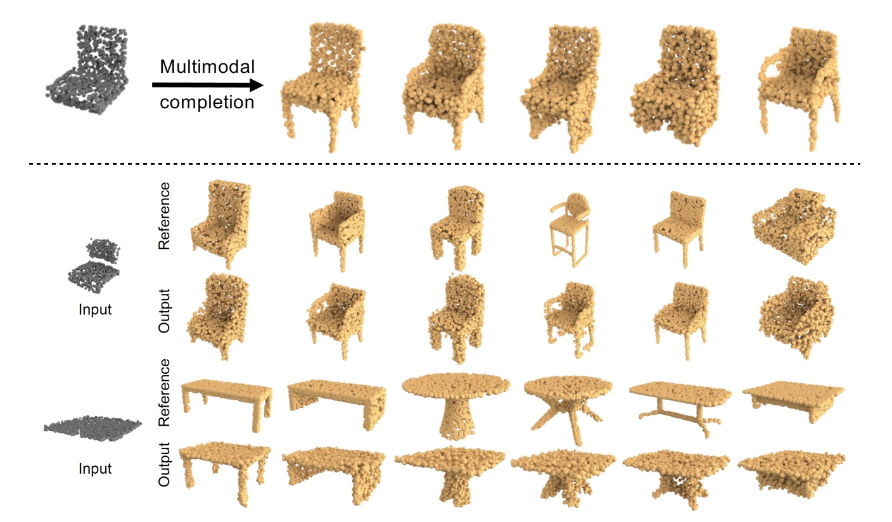
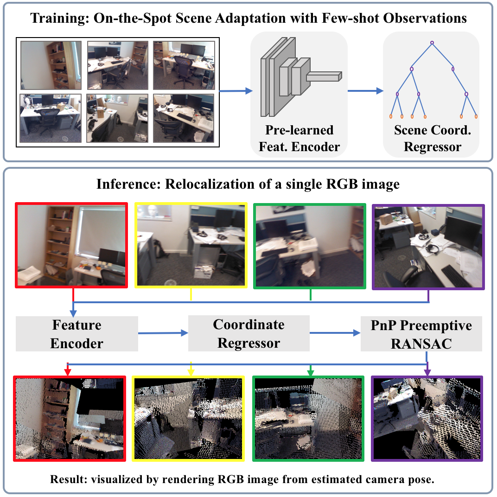
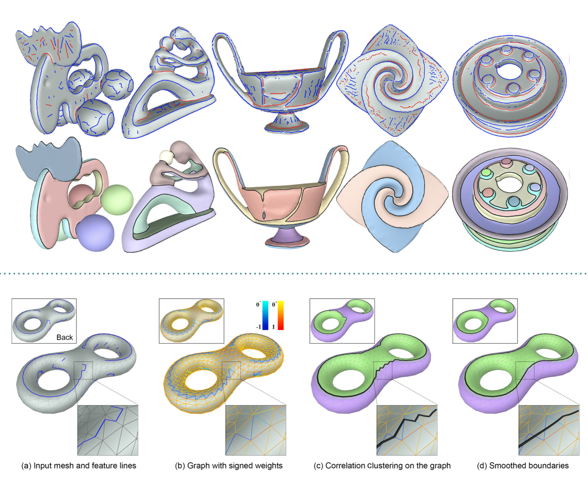

Research Statement
3D visual represents the main channel through which humans, or robot agents, understand and interact with each other and with the real world. As such, visual computing and learning technologies have been developed and applied in emerging applications, such as autonomous systems, augmented reality and digital production.
This research covers several popular topics in the area of visual computing and learning, such as geometric deep learning, 3D vision and traditional geometry modeling and processing. The target is to understand the process of 3D object creation for 3D modeling and analysis, and to find the relationship between 2D visual observation and the 3D world for human and/or robot interaction. Since 2019, We have brought in new concepts, such as sequential part representation and multimodal completion, to 3D generative tasks. We also expand the frontier of scene reconstruction and image localization problems by introducing new challenging scenarios, such as localization with few-shot observations and modeling with continuous changes. The intuition and achievement of each individual research project will be presented with more details in the following sections.
The current research only considers the geometry and structure properties of the 3D object or scene. Our future research will include modeling of texture, material and lighting properties. A recent research trend has been introducing deep learning into traditional pure geometry problems for faster and more robust solutions. Therefore, other future researches will be revisiting some of those problems with deep learning tools and, specifically, more focusing on the issues of uncertainty or ambiguity modeling, which generally exists in real world while mostly ignored by traditional methods.
Visual computing and learning are on the verge of revolutionizing the way we communicate, entertain, and manufacture. As well as some successful products in VR, AR and digital production, the ultimate target of this research is to integrate our visual computing and learning algorithms with hardware platforms and develop useful and popular products, and finally to connect with people.
Selected Research Projects
I. Geometric Deep Learning (2019-2020)
This research of geometric deep learning aims at understanding the process of 3D shape creation and generating realistic 3D objects with both high quality and diversity. The key idea of this research is to connect 3D objects with different modalities of content, such as language, image and sketches, with which human can easily prototype their designing ideas. Our first attempt is to represent shape using sentence-like representation, and learn to synthesize shape with RNN model. We also for the first time convey the ambiguity issue during progressive modeling or shape completion using conditional generative models. More progress will be revealed soon. This research is conducted at Visual Computing and Learning Lab in Peking University, led by Prof. Baoquan Chen. It is supported in part by a research grant from National Natural Science Foundation of China (No.61902007, "Learning Deep Geometry Representation for High Resolution and Structure Preserved Shape Generation"), led by Yixin Zhuang.
|
PQ-NET: A Generative Part Seq2Seq Network for 3D Shapes
CVPR 2020 Key insight: We introduce a deep neural network which represents and generates 3D shapes via sequential part assembly. In a way, we regard the assembly sequence as a "sentence" which organizes and describes the parts constituting a 3D shape. Our approach is inspired, in part, by the resemblance between speech and shape perception, as suggested by the seminal work of Biederman on recognition-by-components (RBC), and learns the process of structural understanding, i.e., to infer shape parts, their compositions, and inter-part relations. |
|  |
Multimodal Shape Completion via Conditional Generative Adversarial Networks
ECCV 2020 (Spotlight) Key insight: Existing learning based methods generatively complete a partial geometry with only single completion result. As the missing regions to be filled is uncertain, for the first time, our method learns to complete the shape with multiple plausible choices. We devise a conditional generative adversarial network to distill the multimodality of shape completion from shape collection without using paired examples as supervision. Our method produces completion results with both high diversity and quality, all the while remaining faithful to the partial input shape. |
II. 3D Vision (2019-2020)
This research of 3D vision mainly investigates image based reconstruction and localization problems. We are working on several challenging scenarios, such as camera relocalization with only few-shot prior knowledge of the scene, progressively scene modeling with continuous object and layout changes, and some robotics related visual sensing and localization problems. This research is conducted at Visual Computing and Learning Lab in Peking University, led by Prof. Baoquan Chen. It is supported by several research grants from National Key R&D Program of China (No.2019YFF0302902, 2018YFB1403901).|  |
Decoupling Features and Coordinates for Few-shot RGB Relocalization
arXiv preprint 2020 Key insight: Cross-scene model adaption is a crucial feature for camera relocalization applied in real scenarios. Existing state-of-the-art approaches, however, can hardly support few-shot scene adaption due to the entangling of image feature extraction and 3D coordinate regression, which requires a large-scale of training data. To address this issue, inspired by how humans relocalize, we approach camera relocalization with a decoupled solution where feature extraction, coordinate regression and pose estimation are performed separately. Our key insight is that robust and discriminative image features used for coordinate regression should be learned by removing the distracting factor of camera views, because coordinates in the world reference frame are obviously independent of local views. Such a decoupled design allows us to adapt the entire model to novel scene and achieve accurate camera pose estimation with only few-shot training samples and two orders of magnitude less training time than the state-of-the-arts. |
III. Geometry Modeling and Processing (2012-2016)
We investigated sketch based geometry modeling and processing. Sketch is one of the most compact geometric representations of an object. It perceptually describes the topology and geometry of the object's underlying surface. This research is to infer the most plausible geometry from user sketches and to inversely find the most representative sketches from given geometry. Unlike deep learning based approaches, this research opted to the traditional workflow, in which low level differential geometry computation and high level domain knowledge inspired optimization are conducted. This research was done from 2012 to 2016, within the Ph.D period of Yixin Zhuang.
|
A General and Efficient Method for Finding Cycles in 3D Curve Networks
ACM Transaction on Graphics (Siggraph Asia 2013) Key insight: Generating surfaces from 3D curve networks has been a longstanding problem in computer graphics. Recent attention to this area has resurfaced as a result of new sketch based modeling systems. In this work we present a new algorithm for finding cycles that bound surface patches. Unlike prior art in this area, the output of our technique is unrestricted, generating both manifold and non-manifold geometry with arbitrary genus. The novel insight behind our method is to formulate our problem as finding local mappings at the vertices and curves of our network, where each mapping describes how incident curves are grouped into cycles. This approach lends us the efficiency necessary to present our system in an interactive design modeler, whereby the user can adjust patch constraints and change the manifold properties of curves while the system automatically re-optimizes the solution. |

|
Anisotropic Geodesics for Live-wire Mesh Segmentation
Computer Graphics Forum (Pacific Graphics 2014) Key insight: We present an interactive method for mesh segmentation that is inspired by the classical live-wire interaction for image segmentation. The core contribution of the work is the definition and computation of wires on surfaces that are likely to lie at segment boundaries. We define wires as geodesics in a new tensor-based anisotropic metric, which improves upon previous metrics in stability and feature-awareness. We further introduce a simple but effective mesh embedding approach that allows geodesic paths in an anisotropic path to be computed efficiently using existing algorithms designed for Euclidean geodesics. Our tool is particularly suited for delineating segmentation boundaries that are aligned with features or curvature directions, and we demonstrate its use in creating artist-guided segmentations. |
|  |
Feature-Aligned Segmentation using Correlation Clustering
Computational Visual Media 2017 (best paper honorable mentioned) Key insight: We present an algorithm for segmenting a mesh into patches whose boundaries are aligned with prominent ridge and valley lines of the shape. Our key insight is that this problem can be formulated as Correlation Clustering (CC), a graph partitioning problem originated from the data mining community. The formulation lends two unique advantages to our method over existing segmentation methods. First, since CC is non-parametric, our method requires few parameters to tune. Second, as CC is governed by edge weights in the graph, our method offers users direct and local control over the segmentation result. Our technical contributions include the construction of the weighted graph on which CC is defined, a speed-up strategy for computing CC on this graph, and an interactive tool for editing the segmentation. Our experiments showed that our method produces qualitatively better segmentations than existing methods on a wide range of inputs. |

|
Deformation-Driven Topology-Varying 3D Shape Correspondence
ACM Transaction on Graphics (Siggraph Asia 2015) Key insight: We present a deformation-driven approach to topology-varying 3D shape correspondence. In this paradigm, the best correspondence between two shapes is the one that results in a minimal-energy, possibly topology-varying, deformation that transforms one shape to conform to the other while respecting the correspondence. Our deformation model, called GeoTopo transform, allows both geometric and topological operations such as part split, duplication, and merging, leading to fine-grained and piecewise continuous correspondence results. The key ingredient of our correspondence scheme is a deformation energy that penalizes geometric distortion, encourages structure preservation, and simultaneously allows topology changes. This is accomplished by connecting shape parts using structural rods, which behave similarly to virtual springs but simultaneously allow the encoding of energies arising from geometric, structural, and topological shape variations. Driven by the combined deformation energy, an optimal shape correspondence is obtained via a pruned beam search. We demonstrate our deformation-driven correspondence scheme on extensive sets of man-made models with rich geometric and topological variation and compare the results to state-of-the-art approaches. |